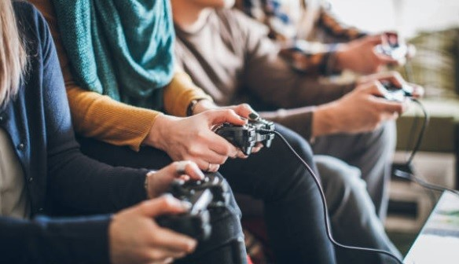

A tecnologia começou a fazer parte do nosso dia a dia, e trouxe benefícios, ela nos ajuda dando a melhor comunicações através das redes sociais, a internet é acessada por pessoas de todas as idades mais especialmente entre os jovens e as crianças. Os videogames e os jogos eletrônicos passaram a ser um entretenimento para as pessoas dessa faixa etária. A internet também nos ajuda nas criatividade oferecendo novas formas de aprendizados.
Essa pesquisa foi feita por alunos do departamento de Psicologia Experimental do Instituto de Psicologia, São Paulo, SP, Brasil E também por participantes do projeto Quixote A maioria dos adolescentes entrevistados estão na escola, muitos aprenderam a usar a internet sozinhos, com jogos eletrônicos interagindo com amigos e familiares principalmente com a comunicação e o entretenimento. E os entrevistados relatam que sabe dos riscos que pode acontecer.
Em 2013 foi realizada a segunda edição de pesquisa para investigar as consequências dos riscos associados a exposição online de crianças e adolescentes no Brasil. Foram entrevistados 60 adolescentes com idade entre 14 a 18, que frequentavam o projeto Quixote, entre agosto a dezembro de 2012.
A amostra foi composta por 60 adolescente, sendo 34 do sexo masculino ( 57°/ ) e 26 do sexo feminino sendo ( 43°/ ) e a idade média foi de 15 anos.
A tecnologia pode propiciar incremento na qualidade de vida viabilizando o acesso a educação, cultura, saúde, comunicação, serviços, etc.
Uma limitação deste estudo é o tamanho reduzido da amostra e sua restrição s um projeto desenvolvido na cidade de são Paulo. Além disso é importante considerar um viés de seleção, uma vez que não houve sorteio de amostra, mas foram entrevistados de forma aleatória os adolescentes que estavam presentes nos dias em que os entrevistadores podiam aplicar o questionário. Os dados foram acolhidos no 2° semestre de 2012, de forma que seria importante realizar novos estudos, com população mais abrangente.
Conforme falado pelo presente estudo, adolescentes em situação de vulnerabilidade social têm acesso a jogos eletrônicos e à internet, sendo o uso prioritário relacionado a lazer e redes sociais. Os jovens sabem dos perigos relacionados a essas atividades, porém nem sempre tomam as devidas preucações.
